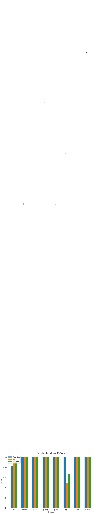

#Pra_UAS
##Crawling berita dari Detik.com
!pip install requests
!pip install beautifulsoup4
Requirement already satisfied: requests in /usr/local/lib/python3.10/dist-packages (2.31.0)
Requirement already satisfied: charset-normalizer<4,>=2 in /usr/local/lib/python3.10/dist-packages (from requests) (3.3.2)
Requirement already satisfied: idna<4,>=2.5 in /usr/local/lib/python3.10/dist-packages (from requests) (3.6)
Requirement already satisfied: urllib3<3,>=1.21.1 in /usr/local/lib/python3.10/dist-packages (from requests) (2.0.7)
Requirement already satisfied: certifi>=2017.4.17 in /usr/local/lib/python3.10/dist-packages (from requests) (2023.11.17)
Requirement already satisfied: beautifulsoup4 in /usr/local/lib/python3.10/dist-packages (4.11.2)
Requirement already satisfied: soupsieve>1.2 in /usr/local/lib/python3.10/dist-packages (from beautifulsoup4) (2.5)
Mengambil berita dari Detik.com#
import requests
from bs4 import BeautifulSoup
import csv
import pandas as pd
import requests
from bs4 import BeautifulSoup
pencarian = 'pilpres 2024'
cari = pencarian.replace(' ','+')
tglAwal = '11/11/2023'
tglAkhir = '11/12/2023'
header={
'user-agent':'Mozilla/5.0 (Windows NT 10.0; Win64; x64) AppleWebKit/537.36 (KHTML, like Gecko) Chrome/109.0.0.0 Safari/537.36'
}
berita_list = []
for halaman in range(10):
url = f'https://www.detik.com/search/searchall?query={cari}&sortby=time&fromdatex={tglAwal}&todatex={tglAkhir}&page={halaman}'
# Mengambil data dari detik.com
req = requests.get(url,header)
soup = BeautifulSoup(req.text, 'lxml')
listberita = soup.find('div', class_='list media_rows list-berita')
artikel = listberita.find_all('article')
for x in artikel:
url2 = x.find('a')['href']
judul = x.find('a').find('h2').text
# Mengambil data dari setiap konten
urlkonten = requests.get(url2, header)
soupkonten = BeautifulSoup(urlkonten.text, 'lxml')
# Mencoba mengekstrak kategori dari struktur HTML
kategori_element = soupkonten.find('span', class_='detail__label')
kategori = kategori_element.text.strip() if kategori_element else 'Tidak Diketahui'
konten = soupkonten.find_all('div', class_='detail__body-text itp_bodycontent')
for x in konten:
isi = x.find_all('p')
y = [y.text for y in isi]
fixkonten = ''.join(y).replace('\n','').replace('ADVERTISEMENT','').replace('SCROLL TO RESUME CONTENT','')
# Menambahkan berita ke dalam daftar dengan kategori
berita_list.append([judul, fixkonten,kategori])
---------------------------------------------------------------------------
KeyboardInterrupt Traceback (most recent call last)
<ipython-input-3-f7c37d6f71eb> in <cell line: 13>()
25
26 # Mengambil data dari setiap konten
---> 27 urlkonten = requests.get(url2, header)
28 soupkonten = BeautifulSoup(urlkonten.text, 'lxml')
29
/usr/local/lib/python3.10/dist-packages/requests/api.py in get(url, params, **kwargs)
71 """
72
---> 73 return request("get", url, params=params, **kwargs)
74
75
/usr/local/lib/python3.10/dist-packages/requests/api.py in request(method, url, **kwargs)
57 # cases, and look like a memory leak in others.
58 with sessions.Session() as session:
---> 59 return session.request(method=method, url=url, **kwargs)
60
61
/usr/local/lib/python3.10/dist-packages/requests/sessions.py in request(self, method, url, params, data, headers, cookies, files, auth, timeout, allow_redirects, proxies, hooks, stream, verify, cert, json)
587 }
588 send_kwargs.update(settings)
--> 589 resp = self.send(prep, **send_kwargs)
590
591 return resp
/usr/local/lib/python3.10/dist-packages/requests/sessions.py in send(self, request, **kwargs)
701
702 # Send the request
--> 703 r = adapter.send(request, **kwargs)
704
705 # Total elapsed time of the request (approximately)
/usr/local/lib/python3.10/dist-packages/requests/adapters.py in send(self, request, stream, timeout, verify, cert, proxies)
484
485 try:
--> 486 resp = conn.urlopen(
487 method=request.method,
488 url=url,
/usr/local/lib/python3.10/dist-packages/urllib3/connectionpool.py in urlopen(self, method, url, body, headers, retries, redirect, assert_same_host, timeout, pool_timeout, release_conn, chunked, body_pos, preload_content, decode_content, **response_kw)
789
790 # Make the request on the HTTPConnection object
--> 791 response = self._make_request(
792 conn,
793 method,
/usr/local/lib/python3.10/dist-packages/urllib3/connectionpool.py in _make_request(self, conn, method, url, body, headers, retries, timeout, chunked, response_conn, preload_content, decode_content, enforce_content_length)
535 # Receive the response from the server
536 try:
--> 537 response = conn.getresponse()
538 except (BaseSSLError, OSError) as e:
539 self._raise_timeout(err=e, url=url, timeout_value=read_timeout)
/usr/local/lib/python3.10/dist-packages/urllib3/connection.py in getresponse(self)
459
460 # Get the response from http.client.HTTPConnection
--> 461 httplib_response = super().getresponse()
462
463 try:
/usr/lib/python3.10/http/client.py in getresponse(self)
1373 try:
1374 try:
-> 1375 response.begin()
1376 except ConnectionError:
1377 self.close()
/usr/lib/python3.10/http/client.py in begin(self)
316 # read until we get a non-100 response
317 while True:
--> 318 version, status, reason = self._read_status()
319 if status != CONTINUE:
320 break
/usr/lib/python3.10/http/client.py in _read_status(self)
277
278 def _read_status(self):
--> 279 line = str(self.fp.readline(_MAXLINE + 1), "iso-8859-1")
280 if len(line) > _MAXLINE:
281 raise LineTooLong("status line")
/usr/lib/python3.10/socket.py in readinto(self, b)
703 while True:
704 try:
--> 705 return self._sock.recv_into(b)
706 except timeout:
707 self._timeout_occurred = True
/usr/lib/python3.10/ssl.py in recv_into(self, buffer, nbytes, flags)
1301 "non-zero flags not allowed in calls to recv_into() on %s" %
1302 self.__class__)
-> 1303 return self.read(nbytes, buffer)
1304 else:
1305 return super().recv_into(buffer, nbytes, flags)
/usr/lib/python3.10/ssl.py in read(self, len, buffer)
1157 try:
1158 if buffer is not None:
-> 1159 return self._sslobj.read(len, buffer)
1160 else:
1161 return self._sslobj.read(len)
KeyboardInterrupt:
###Berita berupa list dibuat kedalam DataFrame Pandas
Filtering berita dari Kategori News
def del_word(string_awal, kata_hapus):
string_hasil = string_awal.replace(kata_hapus, '')
return string_hasil
filter_berita = []
for i in range(len(berita_list)):
if berita_list[i][2] != 'detikNews':
berita_list[i][2] = del_word(berita_list[i][2],"detik")
filter_berita.append(berita_list[i])
Berita yang didapat
frame_berita = pd.DataFrame(filter_berita, columns =['Judul','Isi','Kategori'])
frame_berita
| Judul | Isi | Kategori | |
|---|---|---|---|
| 0 | Profil Rudi Rohi, Salah Satu Panelis Debat Cap... | Debat calon presiden dan calon wakil presiden ... | Bali |
| 1 | Profil Rudi Rohi, Salah Satu Panelis Debat Cap... | Debat calon presiden dan calon wakil presiden ... | Bali |
| 2 | PKB Yakin Pilpres 2024 Dua Putaran, Anies-Cak ... | Politikus senior Partai Kebangkitan Bangsa (PK... | Bali |
| 3 | FX Rudy Ungkap Ganjar Minta Doa Debat Perdana ... | Ketua DPC PDIP Solo FX Hadi Rudyatmo yakin Gan... | Jateng |
| 4 | TPD Ganjar-Mahfud Sulsel Andalkan Survei Inter... | Tim Pemenangan Daerah (TPD) Capres-Cawapres no... | Sulsel |
| 5 | Sudirman Said Sebut Timnas AMIN Akan Bikin Pos... | Tim Nasional pasangan 01 Anies Baswedan-Muhaim... | Jateng |
| 6 | Alasan Bobby Datang ke Rapimda III Golkar Sumut | Wali Kota Medan Bobby Nasution menghadiri Rapi... | Sumut |
| 7 | Dede Yusuf Bicara soal Kesiapan Prabowo-Gibran... | Debat capres-cawapres akan digelar di Kantor K... | Jabar |
| 8 | Kata Airlangga soal Pilih Ijeck atau Bobby di ... | Partai Golkar memberikan surat tugas ke Wali K... | Sumut |
| 9 | Pakar Unpad Nilai Debat Capres Jadi Ajang Pemb... | Debat perdana capres dan cawapres akan digelar... | Jabar |
| 10 | NasDem Sulsel soal Survei Anies Rendah: Di War... | Dewan Pimpinan Wilayah (DPW) NasDem Sulawesi S... | Sulsel |
| 11 | Tak Cuma Emil Dardak, Ini Sederet Nama yang Ra... | Khofifah Indar Parawansa telah mengantongi duk... | Jatim |
| 12 | Capres-Cawapres Bakal Dicecar 18 Pertanyaan Sa... | Debat perdana capres-cawapres 2024 akan berlan... | Jateng |
| 13 | Elektabilitas Naik di Survei Litbang Kompas, A... | Survei Anies Baswedan naik ke peringkat kedua ... | Sumut |
| 14 | BIN Ungkap Kerawanan Pemilu 2024 di DIY Katego... | Badan Intelijen Negara Daerah (BINDA) Daerah I... | Jogja |
| 15 | Anies Janji Bebaskan Pajak Aktivitas Sosial | Calon presiden (capres) Anies Baswedan mengata... | Finance |
| 16 | PAW Anggota DPRD Medan Dipecat Partai gegara D... | DPRD Medan bakal melangsungkan pelantikan perg... | Sumut |
| 17 | Ganjar-Mahfud Paling Buncit di Survei Litbang ... | Litbang Kompas merilis hasil survei terbarunya... | Bali |
| 18 | Disalip AMIN di Survei Litbang Kompas, Ganjar ... | Capres nomor urut 3, Ganjar Pranowo angka bica... | Jogja |
| 19 | Hasil Survei Prabowo-Gibran Unggul di Bali, Pe... | Pasangan capres-cawapres Prabowo Subianto-Gibr... | Bali |
##Prepocessing
###Memuat library nltk dan sastrawi
!pip install sastrawi
import numpy as np
import re, string
import nltk
from tqdm.auto import tqdm
nltk.download('popular')
nltk.download('stopwords')
tqdm.pandas()
from nltk.tokenize import word_tokenize
from nltk.corpus import stopwords
from itertools import chain
Requirement already satisfied: sastrawi in /usr/local/lib/python3.10/dist-packages (1.0.1)
[nltk_data] Downloading collection 'popular'
[nltk_data] |
[nltk_data] | Downloading package cmudict to /root/nltk_data...
[nltk_data] | Package cmudict is already up-to-date!
[nltk_data] | Downloading package gazetteers to /root/nltk_data...
[nltk_data] | Package gazetteers is already up-to-date!
[nltk_data] | Downloading package genesis to /root/nltk_data...
[nltk_data] | Package genesis is already up-to-date!
[nltk_data] | Downloading package gutenberg to /root/nltk_data...
[nltk_data] | Package gutenberg is already up-to-date!
[nltk_data] | Downloading package inaugural to /root/nltk_data...
[nltk_data] | Package inaugural is already up-to-date!
[nltk_data] | Downloading package movie_reviews to
[nltk_data] | /root/nltk_data...
[nltk_data] | Package movie_reviews is already up-to-date!
[nltk_data] | Downloading package names to /root/nltk_data...
[nltk_data] | Package names is already up-to-date!
[nltk_data] | Downloading package shakespeare to /root/nltk_data...
[nltk_data] | Package shakespeare is already up-to-date!
[nltk_data] | Downloading package stopwords to /root/nltk_data...
[nltk_data] | Package stopwords is already up-to-date!
[nltk_data] | Downloading package treebank to /root/nltk_data...
[nltk_data] | Package treebank is already up-to-date!
[nltk_data] | Downloading package twitter_samples to
[nltk_data] | /root/nltk_data...
[nltk_data] | Package twitter_samples is already up-to-date!
[nltk_data] | Downloading package omw to /root/nltk_data...
[nltk_data] | Package omw is already up-to-date!
[nltk_data] | Downloading package omw-1.4 to /root/nltk_data...
[nltk_data] | Package omw-1.4 is already up-to-date!
[nltk_data] | Downloading package wordnet to /root/nltk_data...
[nltk_data] | Package wordnet is already up-to-date!
[nltk_data] | Downloading package wordnet2021 to /root/nltk_data...
[nltk_data] | Package wordnet2021 is already up-to-date!
[nltk_data] | Downloading package wordnet31 to /root/nltk_data...
[nltk_data] | Package wordnet31 is already up-to-date!
[nltk_data] | Downloading package wordnet_ic to /root/nltk_data...
[nltk_data] | Package wordnet_ic is already up-to-date!
[nltk_data] | Downloading package words to /root/nltk_data...
[nltk_data] | Package words is already up-to-date!
[nltk_data] | Downloading package maxent_ne_chunker to
[nltk_data] | /root/nltk_data...
[nltk_data] | Package maxent_ne_chunker is already up-to-date!
[nltk_data] | Downloading package punkt to /root/nltk_data...
[nltk_data] | Package punkt is already up-to-date!
[nltk_data] | Downloading package snowball_data to
[nltk_data] | /root/nltk_data...
[nltk_data] | Package snowball_data is already up-to-date!
[nltk_data] | Downloading package averaged_perceptron_tagger to
[nltk_data] | /root/nltk_data...
[nltk_data] | Package averaged_perceptron_tagger is already up-
[nltk_data] | to-date!
[nltk_data] |
[nltk_data] Done downloading collection popular
[nltk_data] Downloading package stopwords to /root/nltk_data...
[nltk_data] Package stopwords is already up-to-date!
###Cleaning_text
# Text Cleaning
def cleaning(text):
# Menghapus tag HTML
text = re.compile('<.*?>|&([a-z0-9]+|#[0-9]{1,6}|#x[0-9a-f]{1,6});').sub('', str(text))
# Mengubah seluruh teks menjadi huruf kecil
text = text.lower()
# Menghapus spasi pada teks
text = text.strip()
# Menghapus Tanda Baca, karakter spesial, and spasi ganda
text = re.compile('<.*?>').sub('', text)
text = re.compile('[%s]' % re.escape(string.punctuation)).sub(' ', text)
text = re.sub('\s+', ' ', text)
text = re.sub(r'\n', ' ', text)
text = re.sub("", "", text)
# Menghapus Nomor
text = re.sub(r'\[[0-9]*\]', ' ', text)
text = re.sub(r'[^\w\s]', '', str(text).lower().strip())
text = re.sub(r'\d', ' ', text)
text = re.sub(r'\s+', ' ', text)
# Mengubah text yang berisi 'nan' dengan whitespace agar nantinya dapat dihapus
text = re.sub('nan', '', text)
return text
df = frame_berita
Cleaning text
df['clean'] = df['Isi'].apply(lambda x: cleaning(x))
df['clean']
0 debat calon presiden dan calon wakil presiden ...
1 debat calon presiden dan calon wakil presiden ...
2 politikus senior partai kebangkitan bangsa pkb...
3 ketua dpc pdip solo fx hadi rudyatmo yakin gan...
4 tim pemegan daerah tpd capres cawapres nomor u...
5 tim nasional pasangan anies baswedan muhaimin ...
6 wali kota medan bobby nasution menghadiri rapi...
7 debat capres cawapres akan digelar di kantor k...
8 partai golkar memberikan surat tugas ke wali k...
9 debat perdana capres dan cawapres akan digelar...
10 dewan pimpi wilayah dpw nasdem sulawesi selata...
11 khofifah indar parawansa telah mengantongi duk...
12 debat perdana capres cawapres akan berlangsung...
13 survei anies baswedan naik ke peringkat kedua ...
14 badan intelijen negara daerah binda daerah ist...
15 calon presiden capres anies baswedan mengataka...
16 dprd medan bakal melangsungkan pelantikan perg...
17 litbang kompas merilis hasil survei terbarunya...
18 capres nomor urut ganjar pranowo angka bicara ...
19 pasangan capres cawapres prabowo subianto gibr...
Name: clean, dtype: object
Tokenize
df['tokenize'] = df['clean'].apply(lambda x: word_tokenize(x))
df['tokenize']
0 [debat, calon, presiden, dan, calon, wakil, pr...
1 [debat, calon, presiden, dan, calon, wakil, pr...
2 [politikus, senior, partai, kebangkitan, bangs...
3 [ketua, dpc, pdip, solo, fx, hadi, rudyatmo, y...
4 [tim, pemegan, daerah, tpd, capres, cawapres, ...
5 [tim, nasional, pasangan, anies, baswedan, muh...
6 [wali, kota, medan, bobby, nasution, menghadir...
7 [debat, capres, cawapres, akan, digelar, di, k...
8 [partai, golkar, memberikan, surat, tugas, ke,...
9 [debat, perdana, capres, dan, cawapres, akan, ...
10 [dewan, pimpi, wilayah, dpw, nasdem, sulawesi,...
11 [khofifah, indar, parawansa, telah, mengantong...
12 [debat, perdana, capres, cawapres, akan, berla...
13 [survei, anies, baswedan, naik, ke, peringkat,...
14 [badan, intelijen, negara, daerah, binda, daer...
15 [calon, presiden, capres, anies, baswedan, men...
16 [dprd, medan, bakal, melangsungkan, pelantikan...
17 [litbang, kompas, merilis, hasil, survei, terb...
18 [capres, nomor, urut, ganjar, pranowo, angka, ...
19 [pasangan, capres, cawapres, prabowo, subianto...
Name: tokenize, dtype: object
Remove Stopword
stop_words = set(chain(stopwords.words('indonesian')))
df['remove_stopword'] = df['tokenize'].apply(lambda x: [w for w in x if not w in stop_words])
df['remove_stopword']
0 [debat, calon, presiden, calon, wakil, preside...
1 [debat, calon, presiden, calon, wakil, preside...
2 [politikus, senior, partai, kebangkitan, bangs...
3 [ketua, dpc, pdip, solo, fx, hadi, rudyatmo, g...
4 [tim, pemegan, daerah, tpd, capres, cawapres, ...
5 [tim, nasional, pasangan, anies, baswedan, muh...
6 [wali, kota, medan, bobby, nasution, menghadir...
7 [debat, capres, cawapres, digelar, kantor, kpu...
8 [partai, golkar, surat, tugas, wali, kota, med...
9 [debat, perdana, capres, cawapres, digelar, ko...
10 [dewan, pimpi, wilayah, dpw, nasdem, sulawesi,...
11 [khofifah, indar, parawansa, mengantongi, duku...
12 [debat, perdana, capres, cawapres, menit, diba...
13 [survei, anies, baswedan, peringkat, litbang, ...
14 [badan, intelijen, negara, daerah, binda, daer...
15 [calon, presiden, capres, anies, baswedan, mem...
16 [dprd, medan, melangsungkan, pelantikan, perga...
17 [litbang, kompas, merilis, hasil, survei, terb...
18 [capres, nomor, urut, ganjar, pranowo, angka, ...
19 [pasangan, capres, cawapres, prabowo, subianto...
Name: remove_stopword, dtype: object
Stemming
from Sastrawi.Stemmer.StemmerFactory import StemmerFactory
from tqdm.auto import tqdm
factory = StemmerFactory()
stemmer = factory.create_stemmer()
df['steming'] = df['remove_stopword'].progress_apply(lambda x: stemmer.stem(' '.join(x)).split(' '))
Hasil
df['Isi_terbaru'] = df['steming'].apply(lambda tokens: ' '.join(tokens))
df['Isi_terbaru']
0 debat calon presiden calon wakil presiden capr...
1 debat calon presiden calon wakil presiden capr...
2 politikus senior partai bangkit bangsa pkb hel...
3 ketua dpc pdip solo fx had rudyatmo ganjar pra...
4 tim megan daerah tpd capres cawapres nomor uru...
5 tim nasional pasang anies baswedan muhaimin is...
6 wali kota medan bobby nasution hadir rapimda i...
7 debat capres cawapres gelar kantor kpu ri jaka...
8 partai golkar surat tugas wali kota medan bobb...
9 debat perdana capres cawapres gelar komisi pil...
10 dewan pimpi wilayah dpw nasdem sulawesi selata...
11 khofifah indar parawansa kantong dukung parpol...
12 debat perdana capres cawapres menit bagi segme...
13 survei anies baswedan peringkat litbang kompas...
14 badan intelijen negara daerah binda daerah ist...
15 calon presiden capres anies baswedan bebas paj...
16 dprd medan langsung lantik ganti paw anggota f...
17 litbang kompas rilis hasil survei baru pilih p...
18 capres nomor urut ganjar pranowo angka bicara ...
19 pasang capres cawapres prabowo subianto gibran...
Name: Isi_terbaru, dtype: object
##SVM
Installing library
!pip install scikit-learn
!pip install numpy
!pip install matplotlib
Requirement already satisfied: scikit-learn in /usr/local/lib/python3.10/dist-packages (1.2.2)
Requirement already satisfied: numpy>=1.17.3 in /usr/local/lib/python3.10/dist-packages (from scikit-learn) (1.23.5)
Requirement already satisfied: scipy>=1.3.2 in /usr/local/lib/python3.10/dist-packages (from scikit-learn) (1.11.4)
Requirement already satisfied: joblib>=1.1.1 in /usr/local/lib/python3.10/dist-packages (from scikit-learn) (1.3.2)
Requirement already satisfied: threadpoolctl>=2.0.0 in /usr/local/lib/python3.10/dist-packages (from scikit-learn) (3.2.0)
Requirement already satisfied: numpy in /usr/local/lib/python3.10/dist-packages (1.23.5)
Requirement already satisfied: matplotlib in /usr/local/lib/python3.10/dist-packages (3.7.1)
Requirement already satisfied: contourpy>=1.0.1 in /usr/local/lib/python3.10/dist-packages (from matplotlib) (1.2.0)
Requirement already satisfied: cycler>=0.10 in /usr/local/lib/python3.10/dist-packages (from matplotlib) (0.12.1)
Requirement already satisfied: fonttools>=4.22.0 in /usr/local/lib/python3.10/dist-packages (from matplotlib) (4.46.0)
Requirement already satisfied: kiwisolver>=1.0.1 in /usr/local/lib/python3.10/dist-packages (from matplotlib) (1.4.5)
Requirement already satisfied: numpy>=1.20 in /usr/local/lib/python3.10/dist-packages (from matplotlib) (1.23.5)
Requirement already satisfied: packaging>=20.0 in /usr/local/lib/python3.10/dist-packages (from matplotlib) (23.2)
Requirement already satisfied: pillow>=6.2.0 in /usr/local/lib/python3.10/dist-packages (from matplotlib) (9.4.0)
Requirement already satisfied: pyparsing>=2.3.1 in /usr/local/lib/python3.10/dist-packages (from matplotlib) (3.1.1)
Requirement already satisfied: python-dateutil>=2.7 in /usr/local/lib/python3.10/dist-packages (from matplotlib) (2.8.2)
Requirement already satisfied: six>=1.5 in /usr/local/lib/python3.10/dist-packages (from python-dateutil>=2.7->matplotlib) (1.16.0)
Import library
!pip install googletrans==4.0.0-rc1
Requirement already satisfied: googletrans==4.0.0-rc1 in /usr/local/lib/python3.10/dist-packages (4.0.0rc1)
Requirement already satisfied: httpx==0.13.3 in /usr/local/lib/python3.10/dist-packages (from googletrans==4.0.0-rc1) (0.13.3)
Requirement already satisfied: certifi in /usr/local/lib/python3.10/dist-packages (from httpx==0.13.3->googletrans==4.0.0-rc1) (2023.11.17)
Requirement already satisfied: hstspreload in /usr/local/lib/python3.10/dist-packages (from httpx==0.13.3->googletrans==4.0.0-rc1) (2023.1.1)
Requirement already satisfied: sniffio in /usr/local/lib/python3.10/dist-packages (from httpx==0.13.3->googletrans==4.0.0-rc1) (1.3.0)
Requirement already satisfied: chardet==3.* in /usr/local/lib/python3.10/dist-packages (from httpx==0.13.3->googletrans==4.0.0-rc1) (3.0.4)
Requirement already satisfied: idna==2.* in /usr/local/lib/python3.10/dist-packages (from httpx==0.13.3->googletrans==4.0.0-rc1) (2.10)
Requirement already satisfied: rfc3986<2,>=1.3 in /usr/local/lib/python3.10/dist-packages (from httpx==0.13.3->googletrans==4.0.0-rc1) (1.5.0)
Requirement already satisfied: httpcore==0.9.* in /usr/local/lib/python3.10/dist-packages (from httpx==0.13.3->googletrans==4.0.0-rc1) (0.9.1)
Requirement already satisfied: h11<0.10,>=0.8 in /usr/local/lib/python3.10/dist-packages (from httpcore==0.9.*->httpx==0.13.3->googletrans==4.0.0-rc1) (0.9.0)
Requirement already satisfied: h2==3.* in /usr/local/lib/python3.10/dist-packages (from httpcore==0.9.*->httpx==0.13.3->googletrans==4.0.0-rc1) (3.2.0)
Requirement already satisfied: hyperframe<6,>=5.2.0 in /usr/local/lib/python3.10/dist-packages (from h2==3.*->httpcore==0.9.*->httpx==0.13.3->googletrans==4.0.0-rc1) (5.2.0)
Requirement already satisfied: hpack<4,>=3.0 in /usr/local/lib/python3.10/dist-packages (from h2==3.*->httpcore==0.9.*->httpx==0.13.3->googletrans==4.0.0-rc1) (3.0.0)
import numpy as np
import pandas as pd
import matplotlib.pyplot as plt
from sklearn.feature_extraction.text import TfidfVectorizer
from sklearn.model_selection import train_test_split
from sklearn.svm import SVC
from sklearn.metrics import accuracy_score, classification_report
from textblob import TextBlob
from googletrans import Translator
import matplotlib.pyplot as plt
Load data
# Misal dataframe Anda bernama df
X = df['Isi_terbaru'].values
y = df['Kategori'].values
# Bagi data menjadi set pelatihan dan pengujian
X_train, X_test, y_train, y_test = train_test_split(X, y, test_size=0.1, random_state=42)
TF-IDF
vectorizer = TfidfVectorizer(max_features=5000, stop_words='english')
X_train_tfidf = vectorizer.fit_transform(X)
X_test_tfidf = vectorizer.transform(X)
Training model SVM
svm_model = SVC(kernel='linear')
svm_model.fit(X_train_tfidf, y)
SVC(kernel='linear')In a Jupyter environment, please rerun this cell to show the HTML representation or trust the notebook.
On GitHub, the HTML representation is unable to render, please try loading this page with nbviewer.org.
SVC(kernel='linear')
y_pred = svm_model.predict(X_test_tfidf)
accuracy = accuracy_score(y, y_pred)
print(f'Accuracy: {accuracy:.2f}')
print('\nClassification Report:')
print(classification_report(y, y_pred))
Accuracy: 0.95
Classification Report:
precision recall f1-score support
Bali 0.83 1.00 0.91 5
Finance 1.00 1.00 1.00 1
Jabar 1.00 1.00 1.00 2
Jateng 1.00 1.00 1.00 3
Jatim 1.00 1.00 1.00 1
Jogja 1.00 0.50 0.67 2
Sulsel 1.00 1.00 1.00 2
Sumut 1.00 1.00 1.00 4
accuracy 0.95 20
macro avg 0.98 0.94 0.95 20
weighted avg 0.96 0.95 0.94 20
Diagram
# Membuat diagram batang
report_dict = classification_report(y, y_pred, output_dict=True)
labels = list(report_dict.keys())[:-3] # Mengambil label kelas (excludes avg/total row)
precision = [report_dict[label]['precision'] for label in labels]
recall = [report_dict[label]['recall'] for label in labels]
f1_score = [report_dict[label]['f1-score'] for label in labels]
support = [report_dict[label]['support'] for label in labels]
fig, ax = plt.subplots(figsize=(10, 6))
bar_width = 0.2
index = range(len(labels))
bar1 = ax.bar(index, precision, bar_width, label='Precision')
bar2 = ax.bar([i + bar_width for i in index], recall, bar_width, label='Recall')
bar3 = ax.bar([i + 2 * bar_width for i in index], f1_score, bar_width, label='F1-Score')
ax.set_xlabel('Classes')
ax.set_ylabel('Scores')
ax.set_title('Precision, Recall, and F1-Score')
ax.set_xticks([i + bar_width for i in index])
ax.set_xticklabels(labels)
ax.legend()
# Menambahkan nilai support di atas setiap bar
for i, v in enumerate(support):
ax.text(i + bar_width / 2, v + 5, str(v), ha='center', va='bottom')
plt.show()

# Contoh data (gantilah dengan data yang sesuai)
texts = X
# Terjemahkan teks dari Bahasa Indonesia ke Bahasa Inggris
translator = Translator()
translated_texts = [translator.translate(text, src='id', dest='en').text for text in texts]
text_list = []
for l in range(len(X)):
text_list.append("text {}".format(l+1))
# Analisis sentimen untuk setiap teks yang sudah diterjemahkan
sentiments = []
for text in translated_texts:
analysis = TextBlob(text)
sentiment = analysis.sentiment.polarity
sentiments.append(sentiment)
# Menampilkan hasil analisis sentimen
for i, sentiment in enumerate(sentiments):
print(f'Translated Text {i+1}: {sentiment:.2f}')
# Membuat diagram batang untuk sentimen
fig, ax = plt.subplots()
bars = ax.bar(range(len(translated_texts)), sentiments, color=['green' if s > 0 else 'red' if s < 0 else 'gray' for s in sentiments])
ax.set_xticks(range(len(translated_texts)))
ax.set_xticklabels(text_list, rotation=45, ha='right')
ax.set_ylabel('Sentiment Polarity')
ax.set_title('Sentiment Analysis (Translated)')
# Menambahkan label di atas setiap bar
for bar, sentiment in zip(bars, sentiments):
height = bar.get_height()
ax.text(bar.get_x() + bar.get_width()/2, height, f'{sentiment:.2f}', ha='center', va='bottom' if sentiment >= 0 else 'top', color='white' if sentiment != 0 else 'black')
plt.show()
Translated Text 1: 0.00
Translated Text 2: 0.00
Translated Text 3: 0.06
Translated Text 4: 0.19
Translated Text 5: 0.17
Translated Text 6: 0.08
Translated Text 7: -0.13
Translated Text 8: -0.13
Translated Text 9: 0.12
Translated Text 10: 0.12
Translated Text 11: -0.03
Translated Text 12: 0.26
Translated Text 13: 0.00
Translated Text 14: 0.00
Translated Text 15: 0.11
Translated Text 16: 0.15
Translated Text 17: 0.25
Translated Text 18: -0.15
Translated Text 19: 0.09
Translated Text 20: 0.27
if sum(sentiments) > 0 :
print("Kesimpulannya berita mengenai pencarian terkait mendapatkan banyak tanggapan positif dari masyarakat")
elif sum(sentiments) < 0 :
print("Kesimpulannya berita mengenai pencarian terkait mendapatkan banyak tanggapan negatif dari masyarakat ")
else :
print("Kesimpulannya masyarakat tidak peduli")
Kesimpulannya berita mengenai pencarian terkait mendapatkan banyak tanggapan positif dari masyarakat